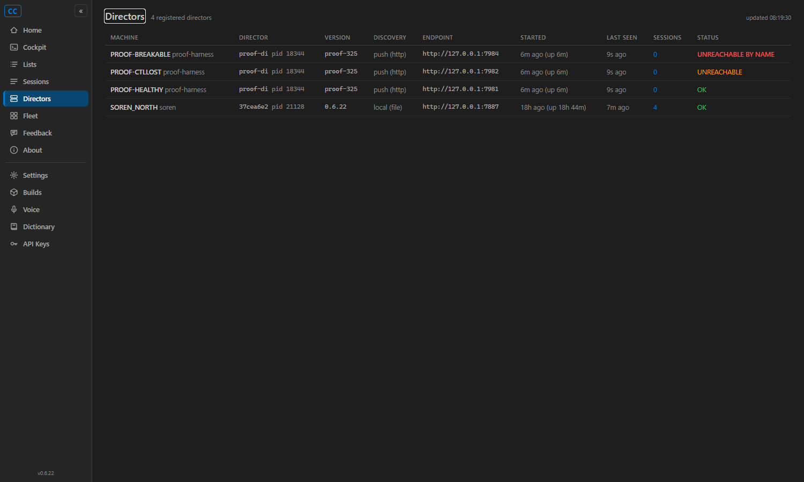

The #223/#224 two-way handshake verified a Director's advertised endpoint only at registration time.
A new Gateway-side AdvertisedEndpointMonitor (src/CcDirector.Gateway/Discovery/AdvertisedEndpointMonitor.cs)
now probes GET {advertised}/healthz of every HTTP-registered Director on the heartbeat cadence (every 15 s)
and requires the answer to identify as the SAME Director (HealthDto.DirectorId match - impostor guard).
A failed probe flips an explicit named state on the fleet record - advertisedEndpointState = "unreachable-by-name" -
with advertisedEndpointUnreachableSince and advertisedEndpointError; a later successful probe auto-clears
it back to "ok". The state machine lives in DirectorRegistry.RecordEndpointProbeResult.
FSW-discovered same-machine Directors (no advertised name) and #324 flagged no-endpoint registrations are not probed (state stays null).
CcDirector.Gateway.Contracts/DirectorDto gains four ADDITIVE, nullable, server-stamped fields:
AdvertisedEndpointState (constants "ok" / "unreachable-by-name"),
AdvertisedEndpointCheckedAt, AdvertisedEndpointUnreachableSince, AdvertisedEndpointError.
Backward compatible: old readers ignore them; null means "not probed / not applicable".
| Criterion | Expected | Actual | Verdict |
|---|---|---|---|
Break the advertised endpoint while heartbeats continue: flagged within 2 heartbeat cycles (30 s) via a named field in GET /directors |
Flag <= 30 s after the break | 16.1 s. Timeline (timeline.txt): BREAK at 12:13:19.081Z, advertisedEndpointState=unreachable-by-name observed at 12:13:35.135Z. Heartbeats ran every 10 s throughout (the entry stayed registered; only the named state flipped). |
PASS |
| Restore the endpoint: state auto-clears within 2 cycles, no restart of either side | Clear <= 30 s after the restore | 14.0 s. RESTORE at 12:13:35.141Z, advertisedEndpointState=ok observed at 12:13:49.155Z. Neither the Gateway nor the registered Director was restarted. |
PASS |
| Unreachable-by-name visibly distinct from healthy and from heartbeat/fan-out loss on the Cockpit directors page | Three visually distinct states | Screenshot below: UNREACHABLE BY NAME (red, new state, tooltip carries reason + since) vs UNREACHABLE (amber, existing fan-out/control-plane loss) vs OK (green). | PASS |
| Unit tests for the probe state machine | healthy->fail->flagged; flagged->succeed->cleared; directorId mismatch = failure | 8 tests in AdvertisedEndpointMonitorTests - the three required transitions plus: missing directorId = failure, FSW-discovered not probed, #324 flagged registration not probed, failure-without-reason throws, re-register resets state. All pass (Passed: 8, Failed: 0); neighboring registry suites re-run green (38 tests). |
PASS |
| Probe failures logged Gateway-side with endpoint + reason | Log lines carry endpoint and reason | gateway-log-excerpt.txt: flag transition, recovery, and every-10th-repeat lines each carry endpoint=... and reason=... (throttled per the #197 log-drown lesson). |
PASS |
12:13:11.048Z REGISTERED proof-dir-325 endpoint=http://127.0.0.1:7984 -> HTTP 201
12:13:19.080Z STATE proof-dir-325 advertisedEndpointState=ok
12:13:19.081Z BREAK advertised endpoint killed (heartbeats continue, every 10 s)
12:13:35.135Z STATE proof-dir-325 advertisedEndpointState=unreachable-by-name
error=healthz probe timed out after 2s at http://127.0.0.1:7984/healthz
12:13:35.138Z FLAGGED FLAG-LATENCY 16.1s (criterion: <= 30s)
12:13:35.141Z RESTORE advertised endpoint relaunched
12:13:49.155Z STATE proof-dir-325 advertisedEndpointState=ok
12:13:49.155Z CLEARED CLEAR-LATENCY 14.0s (criterion: <= 30s)

tailscale serve mapping. The serve table on the user's machines is production infrastructure
(owned by the production Gateway's provisioner - manipulating it broke the fleet in #179/#200), and the
operating rules for this session forbid touching the production Gateway or the user's machines. The proof
therefore runs the IDENTICAL property on an isolated rig: an isolated Gateway built from this branch
(CC_GATEWAY_NO_TAILSCALE=1, so it never touches the real serve table), with Directors registered
over the same wire contract a real Director uses (register / heartbeat every 10 s / healthz echoing
directorId), whose advertised endpoint is killed and restored WHILE HEARTBEATS CONTINUE. The probe logic
under test is transport-agnostic (an HTTP GET to the advertised URL); a tailnet hop changes only the failure
string, not the state machine. QA can re-run the cross-machine variant verbatim if it wants the literal setup.
No container/topology change. docs/cencon/architecture_manifest.yaml gained the
AdvertisedEndpointMonitor component entry under the Gateway container (manifest last_updated
already 2026-06-11). No blocking security rule touched: the probe is an unauthenticated GET to an endpoint the
Director itself advertised, identical to the existing registration-time probe.
| File | Change |
|---|---|
src/CcDirector.Gateway.Contracts/DirectorDto.cs | 4 additive probe-state fields + 2 state constants |
src/CcDirector.Gateway/Discovery/AdvertisedEndpointMonitor.cs | NEW - the 15 s probe loop + impostor guard |
src/CcDirector.Gateway/Discovery/DirectorRegistry.cs | RecordEndpointProbeResult state machine + counter hygiene on upsert/remove/sweep |
src/CcDirector.Gateway/Discovery/DirectorEndpointClient.cs | GetHealthDetailedAsync (probe with failure reason) |
src/CcDirector.Gateway/GatewayHost.cs | start the monitor on StartAsync, dispose on StopAsync |
src/CcDirector.Cockpit/Components/Pages/Directors.razor + wwwroot/app.css | red UNREACHABLE BY NAME badge, distinct from amber UNREACHABLE and green OK |
src/CcDirector.Gateway.Tests/AdvertisedEndpointMonitorTests.cs | NEW - 8 state-machine tests |
docs/cencon/architecture_manifest.yaml | AdvertisedEndpointMonitor component entry |